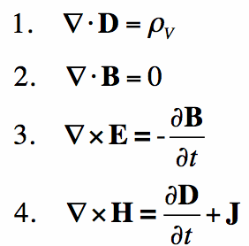
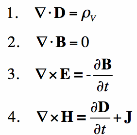
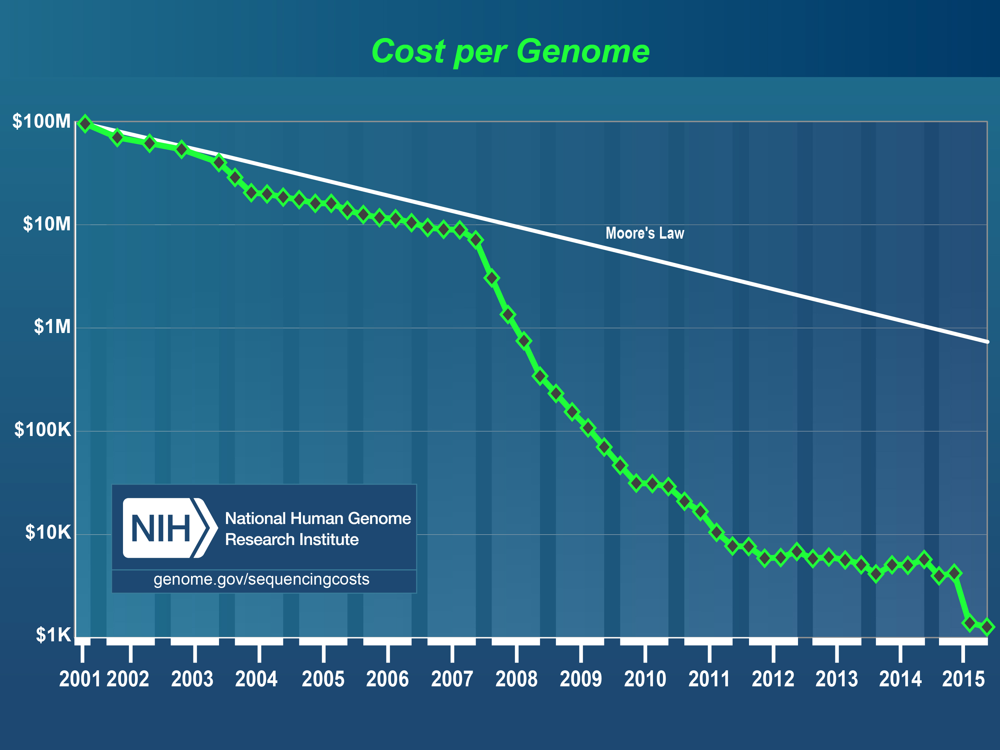
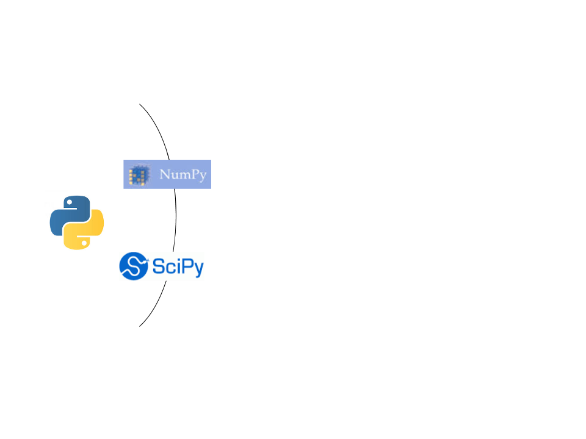
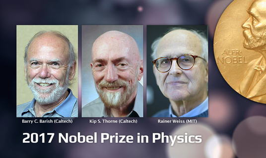
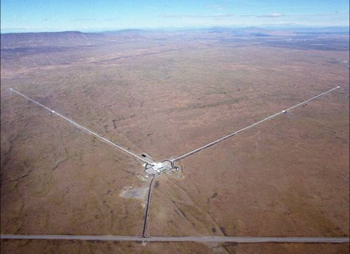

Data and Society
Data Science: an interdisciplinary field
Follow along at:

The paradigms of scientific discovery
1. Empirical (experimental)
Example: Galileo Galilei's experiment (16th Century)


The paradigms of scientific discovery
1. Empirical (experimental)
2. Theoretical (mathematical)
Example: Maxwell's laws of electromagnetism (19th century)
 

The paradigms of scientific discovery
1. Empirical (experimental)
2. Theoretical (mathematical)
3. Simulation (computational)
Example: Finite element simulations

The paradigms of scientific discovery
1. Empirical (experimental)
2. Theoretical (mathematical)
3. Simulation (computational)
4. Data-intensive (eScience)

Jim Gray

Examples
Human genetics
Astronomy
Brain science

Human genetics
The DNA in our cells encodes all of our hereditary information
1953: Structure first elucidated
1984: US government decides to sequence the human genome
3.3 B base-pairs!
1990: the Human Genome Project launches
2001: first draft published
2003: HGP completed
Tremendous impact
HGP fact sheet> 1,800 human disease-related genes
> 2,000 genetic tests for human conditions
> 350 biotechnology companies
Recent estimate : $3.8B investment that drove $796B in economic impact.
But that was just the start!
Meaning that large amounts of data keep getting generated!
But that was just the start!

Stephens et al. (2015), PLoS Biology
1,900 BCE!
1960's
1990's
Digital survey astronomy and digital catalogs
Sloan Digital Sky Survey (1998)
But that was just the beginning!
Sloan Digital Sky Survey (1998)
LSST (2019)
Neuroscience: the age of brain observatories
The Allen Institute for Brain Science (2003 -- )
Open source software for science
The Python programming language:
Relatively easy to learn
Free and open source
"Batteries included"
The scientific Python ecosystem

The scientific Python ecosystem

The scientific Python ecosystem

The scientific Python ecosystem

Example: The LIGO collaboration
 Reproducible and Open science!